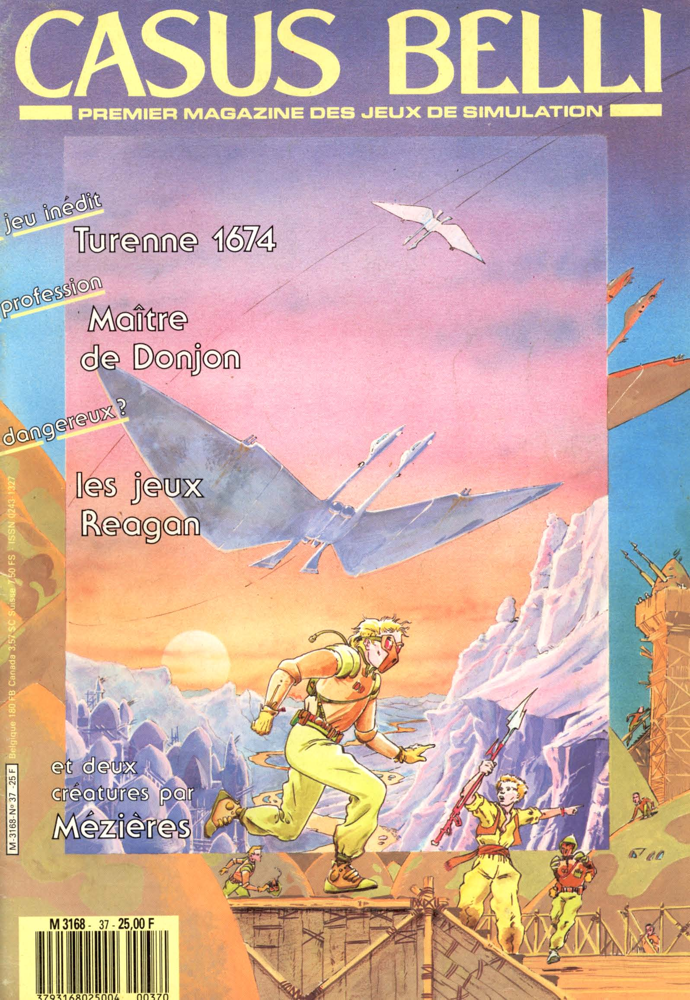
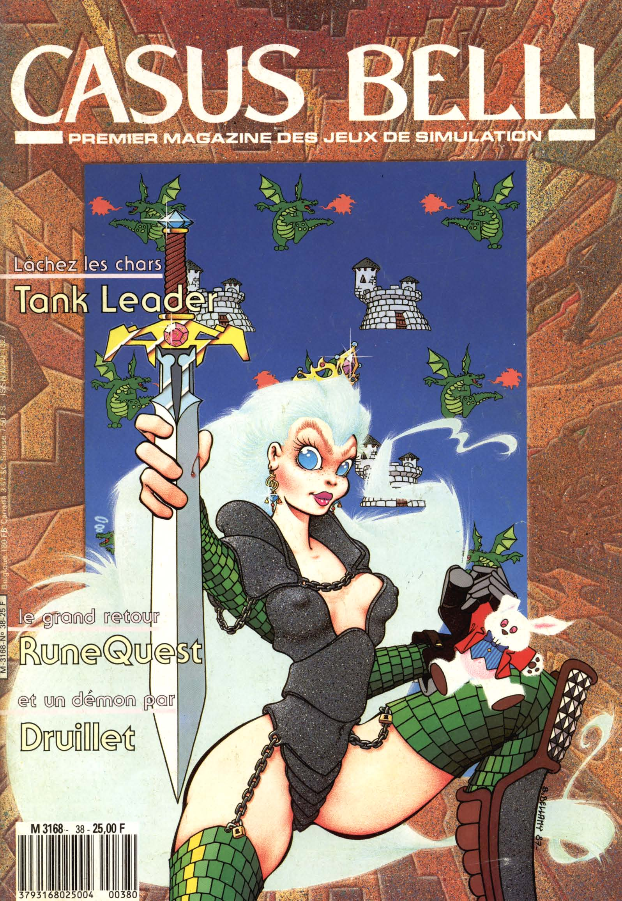

En attendant de replonger dans le numéro 40 quand on sera synchrone avec la sortie du Casus de BBE, j’ai refait un passage en arrière sur les CB 37 et 38 pour retrouver les grands questionnements rôlistes de l’époque.
En cette année 1987, c’est déjà les 7 ans de la revue qui pose l’âge de raison à défaut d’établir l’âge d’or ! Et c’est aussi la 2ème édition du Salon des Jeux de Réflexion (couplé depuis le début avec le Salon de la Maquette pour le meilleur et le pire) qui a eu lieu manifestement dans une belle effervescence (et où étaient alors présents même Gallimard ou Schmidt). Les rubriques Tournois et Clubs montrent aussi un beau dynamisme, mais qu’il faudrait quantifier et comparer pour vraiment dégager si on est dans une période particulièrement faste, ou non. De mon point de vue, je trouve quand même qu’on a une activité qui se développe tout azimut : Paris, Banlieue et Province, à une époque où les clivages entre ces trois entités sont plus marqués que de nos jours (précision : je vivais en banlieue proche de Paris à l’époque et je dis ça de ma perception à l’époque).
Du côté des jeux, on retrouve dans les nouveautés Stormbringer et Hawkmoon, qui sera traduit prochainement (tiens tiens), et Games Workshop très actif alors dans le jdr qui vient de sortir Warhammer (et surtout les premiers tomes de la Campagne Impériale) ; et dont l’édition de Runequest permet de relancer ce dernier. On trouvera d’ailleurs dans le Casus 38 un scénario Runequest par un petit nouveau qui va se faire un nom comme Tristan : Frédéric Weil.
Comme un écho à la situation de nos jours, le jeu de rôle est aussi politique à l’époque et ça fait grincer des dents car Price of Freedom est sorti récemment, et on est à fond dans l’Amérique Reaganienne avec les sorties cinéma contemporaines de Rambo ou Top Gun. Price of Freedom est étrillé (chose rare) dans Casus Belli, qui donne aussi la parole à ses concepteurs Outre-Atlantique et ses détracteurs (des deux côtés de l’océan). Finalement, ça ne change pas de nos grands débats actuels, même si les idées politiques ne sont plus les mêmes.
Les franchises tiennent aussi le haut du pavé sur les gammes et les sorties : on trouve en VO Ghostbusters chez WEG et Teenage Mutant Ninja Turtles chez Palladium, par un certain Erick Wujcik qui sortira ensuite… Ambre ! Et on annonce pour bientôt le futur mythique Star Wars D6 !
A quoi joue-t-on sinon ? A AD&D forcément et CB n’est pas en reste pour publier sur ce jeu car on est encore proche du n°35 consacré à Laelith, et qui continue d’être développé dans cette année 1987. Denis Beck écrit un Profession Maître du Donjon tandis que Gary Gygax est remercié de TSR. CB peine à avoir de l’information sur cet événement, malgré une interview de ce dernier manifestement contrainte par une clause de confidentialité, vu le peu de ce qu’on apprend alors que l’actualité est pourtant brûlante… Pour les jeux en VF, les sorties du moment sont consacrées à Légendes, l’Ultime Epreuve ou Paranoïa pour lequel on publie du matériel 100% français.
Je passe rapidement sur la partie non jeu de rôle : dans la SF, Roland Wagner mentionne très rapidement la sortie de l’Empereur-Dieu de Dune, pour le qualifier plus mauvais tome de la série (opinion que je partage) et lui consacrer deux lignes expéditives. Sur les BD, seul Elfquest ressort de ce qui a traversé les ans. Et on a toujours une partie conséquente de wargame avec des jeux en encart, et surtout, surtout, un jeune chroniqueur de Casus, Laurent Henninger, qui ouvre sa bibliothèque et énumère sur deux pages tous les ouvrages fondamentaux pour la bibliothèque d’un wargamer (j’ai toujours été effaré par le paquet de pavés que Laurent Henninger pouvait lister dans les rubriques Inspis de Casus Belli).
Je vais terminer sur un clin d’oeil qui fait là-aussi écho à nos jours. Avant la couverture très sobre du n°39 réalisée par Florence Magnin, celle du 38 est réalisée par Bruno Bellamy et préfigure les futures Bellaminettes avec armure en format lingerie fine et poitrine opulente : comment serait-elle reçue aujourd’hui ?


Pareil, dans le CB 37, on a une courte mention sur l’absence des femmes dans le loisir et comment y remédier (p. 15). Si l’analyse me semble assez conforme à mon ressenti de l’époque (le loisir a tendance à décourager les femmes, plutôt que de les exclure volontairement comme on peut lire maintenant), en revanche le diagnostic d’alors me paraît fumeux : les jdr seraient trop guerriers et compétitifs pour les femmes (sic !) et il faudrait des jeux plus diplomatiques et roleplay parce que ce sont ce qu’affectionnent les joueuses !! (mais ceci a été une vieille thématique portée longtemps par CB). Ce court passage met aussi en lumière le fait que les auteurs soient exclusivement masculins, mais sans chercher à spécialement y remédier… Bref, là aussi, il y avait déjà matière à débattre mais avec les moyens de l’époque, où le Forum Casus se résumait aux pages du magazine, et sur un rythme bimestriel !
Les femmes sont-elles d’ailleurs complètement absentes en cette année 1987 ? En plongeant dans les Petites Annonces de ces deux numéros, ce qui ressort est évidemment la prépondérance masculine et même la jeunesse de ceux qui ont posté : on retrouve beaucoup de demandes de partenaires autour de 14-15 ans. Mais dans notre numéro 38, on trouvera aussi quelques annonces qui montrent une diversité autre que purement masculine / hétéro : des joueuses en recherche de partenaires (notamment Hélène débutante qui cherche un club adulte 😄 ), de l’écriture inclusive (recherche explicite de joueur(euse) ), et même une annonce qui spécifie une recherche de joueurs masculins & gays. Bref, pour la lecture uniquement rétrograde de l’époque, on repassera !